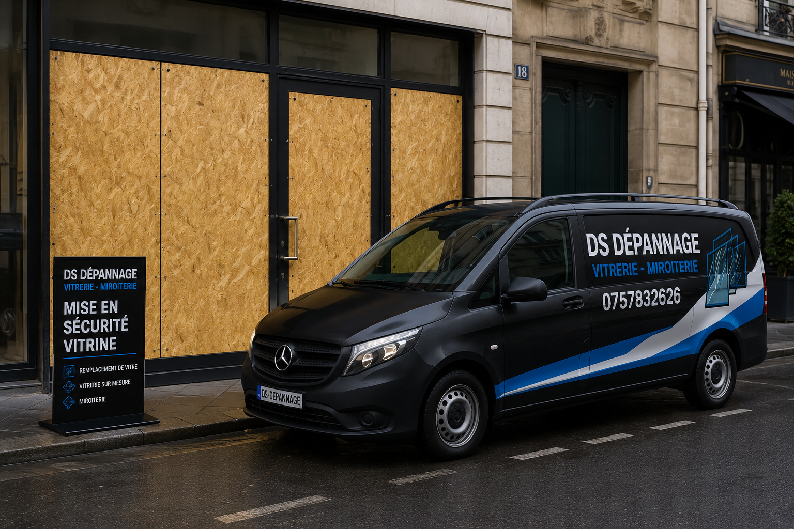

Danger immédiat
Verre instable, éclats au sol et accès ouvert sont traités avant toute autre étape.
Ouverture exposée, vitrine brisée, porte vitrée dangereuse : sécurisation avant remplacement
Une urgence vitrerie ne consiste pas toujours à poser immédiatement un nouveau verre. À Évreux, lorsqu'une vitre se casse, la priorité est d'écarter le danger, de protéger l'accès et de préparer un remplacement fiable sans improvisation.

Verre instable, éclats au sol et accès ouvert sont traités avant toute autre étape.
Un panneau de protection peut être posé si le vitrage définitif doit être commandé.
Surface, accès, urgence, vitrage et sécurité sont détaillés avant intervention.
Les mesures utiles sont relevées pour une pose définitive propre.
Un bris de glace peut venir d'un choc, d'une tentative d'effraction, d'un accident domestique, d'un courant d'air violent ou d'un vitrage déjà fragilisé. Le problème n'est pas seulement le carreau cassé : une ouverture non protégée peut laisser entrer le froid, la pluie, les intrusions et présenter un risque de coupure.
La première étape consiste à analyser ce qui reste en place. Le verre peut paraître immobile mais se détacher au moindre mouvement. Sur une vitrine, le poids du vitrage rend la manipulation plus délicate. Sur une porte vitrée, il faut aussi tenir compte de l'usage : passage, poignée, serrure, fermeture et sécurité des occupants.
DS Dépannage privilégie une intervention ordonnée : retirer ce qui peut tomber, protéger l'espace, condamner provisoirement si nécessaire, puis établir le remplacement adapté. Cette méthode évite de poser dans l'urgence un verre inadapté ou de laisser un commerce vulnérable pendant la nuit.
Certains vitrages sont standards, d'autres doivent être fabriqués. La sécurité provisoire évite de laisser les lieux ouverts.
Un vitrage doit correspondre au châssis, à l'épaisseur attendue, au niveau de sécurité et à l'usage du lieu. Une vitrine, une baie vitrée, un vitrage de porte ou un double vitrage isolant ne se remplacent pas avec une solution au hasard.
Poser trop vite un verre mal adapté peut créer des jeux, des infiltrations, une mauvaise tenue ou une fragilité nouvelle. En urgence, la bonne décision est parfois de protéger puis de commander le bon vitrage.
Un commerce ne peut pas attendre avec une vitrine ouverte. Une habitation au rez-de-chaussée ne doit pas rester accessible. Un bureau doit protéger son matériel et ses documents. La fermeture provisoire répond à ces situations concrètes.
Elle peut être réalisée en attendant la fabrication du vitrage définitif, le passage d'assurance ou la validation d'un devis plus complet.
Le tarif dépend du danger, de la surface et de la solution provisoire ou définitive.
Selon surface, hauteur, verre restant et protection nécessaire.
Selon dimensions, épaisseur et état du support.
Devis selon taille, accès, poids du verre et besoin de fermeture.
Mesure et devis, avec protection si fabrication sur mesure.
Pour une demande générale, consultez la page vitrier Évreux 27000. Pour une fenêtre isolante, voyez aussi le remplacement de double vitrage à Évreux. Pour un local commercial, la page vitrine magasin Évreux détaille les contraintes de commerce.
Évreux centre, Nétreville, Navarre, Saint-Michel, La Madeleine, Cambolle, Clos au Duc et environs selon disponibilité.
Éloignez les personnes du verre, évitez de manipuler les morceaux instables et appelez un vitrier pour sécuriser la zone. La mise en sécurité est prioritaire avant le remplacement définitif.
Oui, une fermeture provisoire peut être posée si le vitrage définitif n'est pas disponible immédiatement. Elle protège le commerce en attendant la fabrication ou la pose du verre adapté.
Cela dépend du type de vitrage, de ses dimensions et de sa disponibilité. Si le verre doit être fabriqué sur mesure, le vitrier sécurise d'abord l'ouverture.
Oui, le coût est expliqué avant intervention selon la surface, le danger, l'accès et la solution provisoire nécessaire.
Décrivez le vitrage, la dangerosité et l'adresse. Une photo peut aider à préparer le devis.